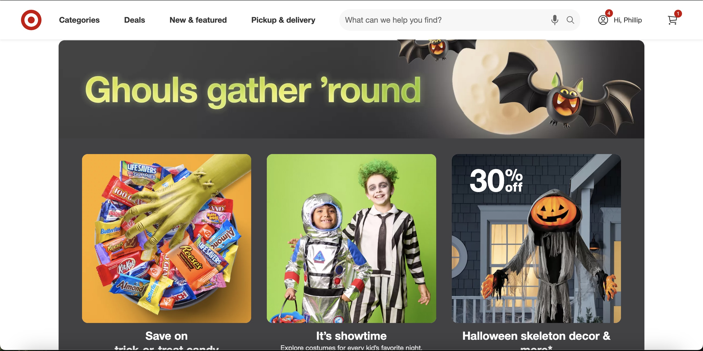

UI/UX Evaluation
HTML Image

- What is the URL of the website?
- https://www.target.com/
- What is the name of the website?
- the website name is target
- Who is the site's target audience?
- This site is targeting customers who want to purchase stuff online or in person store for essential or personal use
- How is the site organized?
- this site is organized for people who want to click on categories on what store they are selling for, deals to save some money or weekly ad,
new and featured item for the upcoming season, pickup and delivery date time if you want deliver at home or in person store
- Which CRAP Design Principle does the use?
- the principle of alignment
- What is the Audit Score
- the audit score for this website is 70
- What is the site's effectiveness?
- i think the site effect was a success because customer can search for the item to buy from theit local store
- What is the site's efficiency? Can users can perform tasks quickly?
- after searching the item you want at the store the user have
- How is the engagement? Is it pleasant to use and appropriate for its industry/topic?
- i think this website is a appropriate to use because everybody can visit target every week to find good deal to save some money instead of buying it for full price
you can make this account for free with no charge for return stuff without a reciept,
- Make at least one recommendation to improve this website based on what you learned in this module.
- i wish i could add a video game promotion for people to buy it for entertainment aside of seasonal item